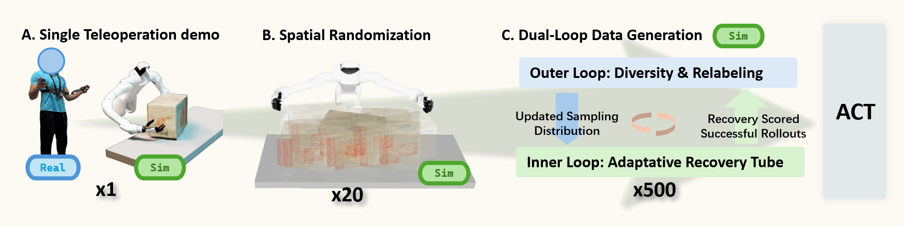
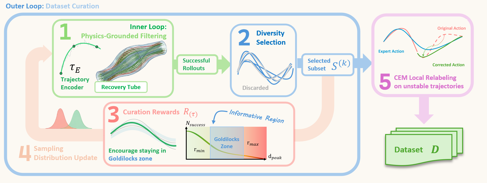
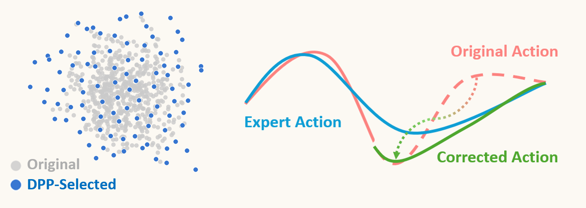
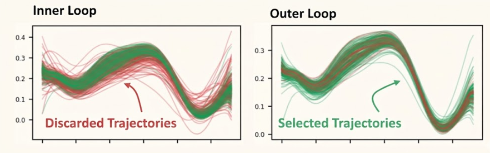
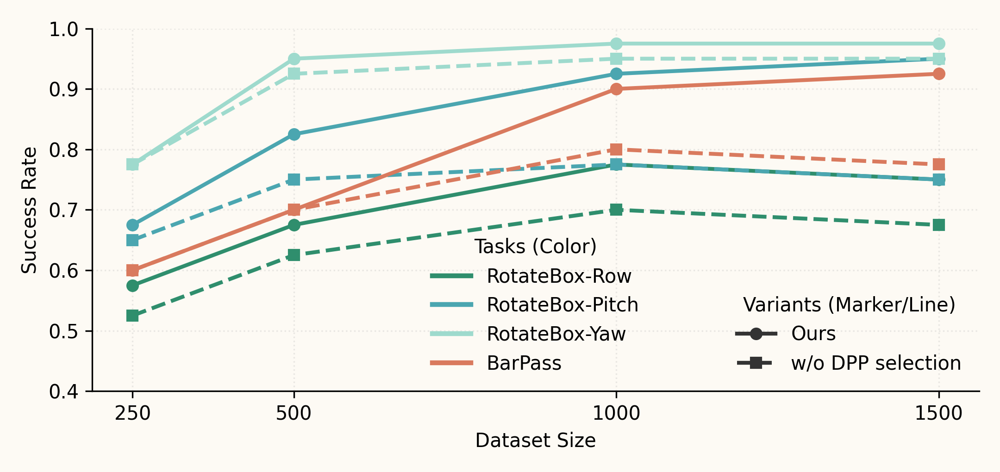
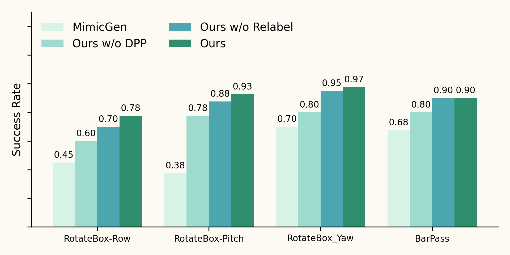

Physically grounded data generation for robust bimanual policy learning from few demonstrations
Author Names Omitted for Anonymous Review
Paper-ID [TBD]

PGDG transforms a single teleoperated demonstration into a compact dataset of successful, diverse recovery behaviors via a dual-loop pipeline: spatial randomization followed by frontier-focused sampling (inner loop) and diversity-preserving curation with selective relabeling (outer loop), producing robust behavior cloning policies for contact-rich bimanual manipulation.
Behavior cloning for contact-rich bimanual manipulation remains challenging because diverse demonstrations are expensive to collect, and even small disturbances can push the system into off-manifold states where no recovery supervision is available. We propose PGDG, a data generation framework that expands a single demonstration into a compact dataset of physically plausible, successful, and diverse recovery behaviors without additional human labeling. At the core of PGDG is a zero-shot dataset curation framework. Physically Grounded Filtering synthesizes stochastic full-episode rollouts near the demonstration and retains successful candidates. The Dataset Curation Framework then prioritizes informative near-failure regions, curates a non-redundant subset of successful trajectories using training-free DCT embeddings and a determinantal point process objective, and selectively refines risky states with short-horizon sampling-based control to provide feedback-consistent corrective supervision. Across four bimanual manipulation tasks, PGDG consistently outperforms spatial-only augmentation in both simulation and zero-shot real-world transfer; for example, on RotateBox-Pitch, it improves success rate from 38% to 93% in simulation and from 35% to 82% on hardware. We also observe comparable gains when finetuning foundation models, improving success rate from 40% to 77.54%.
Approach.
Given a single collected demonstration, our pipeline proceeds in three stages: (1) spatial randomization to generate scene-variant trajectories, (2) an inner loop that samples open-loop nominal plans drifting from the demonstration while remaining near the recoverability frontier, and (3) an outer loop that selects a diverse subset and relabels risky segments with corrective actions.

Figure 1: Method Overview. Starting from a single demonstration variant τE, our method alternates between an inner loop and an outer loop: (1) Success Sampling: the inner loop samples physically feasible nominal plans using a control-point parameterization and executes rollouts in simulation; (2) Curation Reward: we use a curation reward to score successful rollouts and favor less-sampled informative regions; (3) Diversity Selection: we remove redundant trajectories by performing DPP in the DCT embedding space; (4) Sampling Distribution Update: we refit the sampling distribution with the selected subset to encourage the inner loop to explore informative regions in the next iteration; (5) Local Relabeling: finally, before adding trajectories to the dataset, we relabel some risky states with short-horizon CEM under a full-episode success check.
1. Inner Loop: Physics-Grounded Filtering.
The inner loop samples open-loop nominal plans and executes full episodes in simulation. The goal is to always sample at the most desirable region—neither too similar to the nominal trajectory nor too far away where the success rate drops. It collects successful recovery rollouts and estimates a data-driven recovery tube that tracks the recoverability frontier.
Target difficulty matters because recovery data has a "Goldilocks zone": near the demonstration there is no recovery signal, and far from the demonstration there are no successes. The adaptive tube bounds keep sampling in the narrow band where deviations are frequent yet recoverable, maximizing informative recovery supervision per rollout.
The outer loop enforces dataset-level diversity among successful rollouts. It embeds trajectories with DCT, selects a mode-covering subset with DPP, and updates the nominal-plan distribution from the selected rollouts. It then relabels risky segments with more expert-like action labels via short-horizon CEM optimization, retaining only relabeled segments whose full-episode continuations succeed.

Figure 2: Outer-loop diversity selection and relabeling. (a) Inner-loop rollouts are embedded with DCT features, and a DPP selects a compact, diverse subset to maximize coverage per sample. (b) CEM relabeling refines the risky segments of selected trajectories by resampling action labels with corrective actions.

Figure 3: Data generation example. Left: all sampled rollouts/trajectories generated by the sampler. Right: the subset of successful (and selected) trajectories retained and stored in the dataset.
3. Datasize and performance
We further ablate the role of diversity selection, by comparing the policy performance trained with the generated data, w and w/o DPP selection:

Figure 4:Policy performance vs.\ dataset size. Success rate of depth-based ACT policies trained on datasets of increasing size generated from a single demonstration. Without diversity curation (w/o DPP), additional trajectories can be redundant and skew the training distribution, so larger datasets do not necessarily improve performance. In contrast, DPP-based subset selection yields a more balanced, non-redundant dataset and improves the success rate per collected trajectory.
Experiments.
We evaluate PGDG on four contact-rich bimanual manipulation tasks using both simulation and real-world experiments on the Dexmate Vega platform.
Hardware Setup.
We collect source demonstrations on the Dexmate Vega platform, a bimanual mobile manipulator with a pair of 7-DoF arms and wrist F/T sensors. To obtain high-quality source trajectory demonstrations with minimal operator burden, we utilized a wearable GELLO-style exoskeleton for end-effector space teaching.
Figure 4: Teleoperation setup. A GELLO-style exoskeleton is used to perform Cartesian space teaching in simulation on the Dexmate Vega bimanual platform.
Bimanual Tasks.
We selected 4 bimanual tasks to benchmark policy performance: RotateBox-Roll, RotateBox-Pitch, RotateBox-Yaw, and BarPass. The RotateBox tasks involve reorienting a medium-sized cardboard box along different axes, requiring precise contact timing and force coordination. BarPass involves passing a bar between the two arms with both position and orientation accuracy.
RotateBox-Roll
RotateBox-Pitch
RotateBox-Yaw
BarPass
Task demonstrations: Four bimanual manipulation tasks used to evaluate policy robustness under domain randomization.
Policy Evaluation in Simulation.
Starting from a single human demonstration, PGDG generates a dataset of thousands of trajectories. We evaluate policies in Isaac Sim and train a depth-based ACT policy. Given the dynamics- and contact-critical nature of our tasks, MimicGen-style spatial randomization often fails to transfer a demonstration without additional physics-aware correction. Policies trained on our physics-grounded generated data consistently outperform those trained with spatially augmented data alone.

Figure 5: Policy evaluation in simulation.MimicGen denotes data generated with only spatial randomization. Ours w/o Relabel denotes data generated without CEM relabeling. Ours w/o DPP denotes data generated with only inner loop sampling. Our full method achieves the highest success rates across tasks.
Real-World Results.
RotateBox-Row
‹
›
RotateBox-Pitch
‹
›
RotateBox-Yaw
‹
›
BarPass
‹
›
Real-world deployment: Policies trained on PGDG-generated data transfer to the real Dexmate Vega platform for contact-rich bimanual manipulation. Use the arrow buttons to view multiple demonstration videos for each task.
Continous Flipping
‹
Continuous Flipping: From a single demonstration of a box flip, our policy performs continuous flipping with recovery behaviors.
Recovery Behavior: The policy naturally learns how to recover from failure states.
›
Acknowledgements.
Acknowledgements will be added upon publication.
BibTeX
@article{pgdg2025,
title = {Physically Grounded Data Generation for Robust Bi-manual
Policy Learning from Few Demonstrations},
author = {Anonymous},
year = {2025}
}